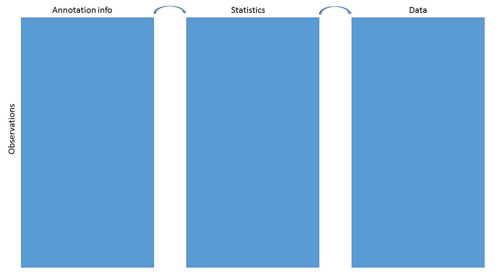

Bioconductor 2022 Annotation Workshop
AnnotationWorkshop.RmdIntroduction to Bioconductor Annotation Resources
Bioc 2022: 27-29 July
Instructors
- James W. MacDonald (jmacdon@umich.edu)
Workshop Description
There are various annotation packages provided by the Bioconductor project that can be used to incorporate additional information to results from high-throughput experiments. This can be as simple as mapping Ensembl IDs to corresponding HUGO gene symbols, to much more complex queries involving multiple data sources. In this workshop we will cover the various classes of annotation packages, what they contain, and how to use them efficiently.
Prerequisites
- Basic knowledge of R syntax
- Basic understanding of the various annotation sources (NCBI, EBI/EMBL)
Useful background reading
- The AnnotationDbi vignette.
- The biomaRt vignette.
- The GenomicFeatures vignette.
Workshop goals and objectives
Annotating data is a complex task. For any high-throughput experiment the analyst usually starts with a set of identifiers for each thing that was measured, and in order to make the results useful to collaborators these identifiers need to be mapped to other identifiers that are either more familiar to collaborators, or that can be used for further analyses. As an example, RNA-Seq data may only have Entrez Gene IDs for each gene measured, and as part of the output you may want to include the gene symbols, which are more likely to be familiar to a Biologist.
Specific goal
We have data and statistics, and we want to add other useful information

The end result might be as simple as a data.frame or HTML table, or
as complex as a RangedSummarizedExperiment
ExpressionSet
load(file.path(system.file(package = "Bioc2022Anno", "extdata"), "eset.Rdata"))
eset## ExpressionSet (storageMode: lockedEnvironment)
## assayData: 33552 features, 6 samples
## element names: exprs
## protocolData: none
## phenoData
## sampleNames: GSM2194079 GSM2194080 ... GSM2194084 (6 total)
## varLabels: title characteristics_ch1.1
## varMetadata: labelDescription
## featureData
## featureNames: 16657436 16657440 ... 17118478 (33552 total)
## fvarLabels: PROBEID ENTREZID SYMBOL GENENAME
## fvarMetadata: labelDescription
## experimentData: use 'experimentData(object)'
## Annotation: pd.hugene.2.0.stExpressionSet (continued)
head(exprs(eset))## GSM2194079 GSM2194080 GSM2194081 GSM2194082 GSM2194083 GSM2194084
## 16657436 8.505158 9.046577 8.382674 9.115481 8.715343 8.566301
## 16657440 7.948860 8.191222 7.901911 8.459781 8.191793 8.219658
## 16657450 10.932934 11.228553 10.948120 11.462231 11.300046 11.300886
## 16657469 9.172462 9.344630 9.193450 9.465584 9.464020 9.135715
## 16657473 6.222049 6.551035 6.000246 6.398798 5.892654 5.592125
## 16657476 8.514300 8.474073 8.407196 8.811238 8.780833 8.874606
head(pData(phenoData(eset)))## title characteristics_ch1.1
## GSM2194079 SW620-miR625-rep1 shRNA: miR-625-3p
## GSM2194080 SW620-miR625-rep2 shRNA: miR-625-3p
## GSM2194081 SW620-miR625-rep3 shRNA: miR-625-3p
## GSM2194082 SW620-scramble-rep1 shRNA: scramble
## GSM2194083 SW620-scramble-rep2 shRNA: scramble
## GSM2194084 SW620-scramble-rep3 shRNA: scrambleExpressionSet (continued)
head(pData(featureData(eset)))## PROBEID ENTREZID SYMBOL
## 16657436 16657436 84771 DDX11L2
## 16657440 16657440 100302278 MIR1302-2
## 16657450 16657450 402483 LINC01000
## 16657469 16657469 140849 LINC00266-1
## 16657473 16657473 729759 OR4F29
## 16657476 16657476 388574 RPL23AP87
## GENENAME
## 16657436 DEAD/H-box helicase 11 like 2
## 16657440 microRNA 1302-2
## 16657450 long intergenic non-protein coding RNA 1000
## 16657469 long intergenic non-protein coding RNA 266-1
## 16657473 olfactory receptor family 4 subfamily F member 29
## 16657476 ribosomal protein L23a pseudogene 87Annotation sources
| Package type | Example |
|---|---|
| ChipDb | hugene20sttranscriptcluster.db |
| OrgDb | org.Hs.eg.db |
| TxDb/EnsDb | TxDb.Hsapiens.UCSC.hg19.knownGene; EnsDb.Hsapiens.v75 |
| OrganismDb | Homo.sapiens |
| BSgenome | BSgenome.Hsapiens.UCSC.hg19 |
| Others | GO.db; KEGG.db |
| AnnotationHub | Online resource |
| biomaRt | Online resource |
Interacting with AnnoDb packages
The main function is select:
select(annopkg, keys, columns, keytype)
Where
annopkg is the annotation package
keys are the IDs that we know
columns are the values we want
-
keytype is the type of key used
- if the keytype is the central key, it can remain unspecified
Simple example
Say we have analyzed data from an Affymetrix Human Gene ST 2.0 array and want to know what the genes are. For purposes of this lab, we just select some IDs at random.
library(hugene20sttranscriptcluster.db)
set.seed(12345)
ids <- featureNames(eset)[sample(1:25000, 5)]
ids## [1] "16858710" "17001289" "16894087" "16813565" "16951883"
select(hugene20sttranscriptcluster.db, ids, "SYMBOL")## 'select()' returned 1:1 mapping between keys and columns## PROBEID SYMBOL
## 1 16858710 JUNB
## 2 17001289 PPP2R2B-IT1
## 3 16894087 LINC01247
## 4 16813565 NR2F2-AS1
## 5 16951883 OSBPL10Questions!
How do you know what the central keys are?
If it’s a ChipDb, the central key are the manufacturer’s probe IDs
It’s sometimes in the name - org.Hs.eg.db, where ‘eg’ means Entrez Gene ID
You can see examples using e.g., head(keys(annopkg)), and infer from that
But note that it’s never necessary to know the central key, as long as you specify the keytype
More questions!
What keytypes or columns are available for a given annotation package?
keytypes(hugene20sttranscriptcluster.db)## [1] "ACCNUM" "ALIAS" "ENSEMBL" "ENSEMBLPROT" "ENSEMBLTRANS"
## [6] "ENTREZID" "ENZYME" "EVIDENCE" "EVIDENCEALL" "GENENAME"
## [11] "GENETYPE" "GO" "GOALL" "IPI" "MAP"
## [16] "OMIM" "ONTOLOGY" "ONTOLOGYALL" "PATH" "PFAM"
## [21] "PMID" "PROBEID" "PROSITE" "REFSEQ" "SYMBOL"
## [26] "UCSCKG" "UNIPROT"
columns(hugene20sttranscriptcluster.db)## [1] "ACCNUM" "ALIAS" "ENSEMBL" "ENSEMBLPROT" "ENSEMBLTRANS"
## [6] "ENTREZID" "ENZYME" "EVIDENCE" "EVIDENCEALL" "GENENAME"
## [11] "GENETYPE" "GO" "GOALL" "IPI" "MAP"
## [16] "OMIM" "ONTOLOGY" "ONTOLOGYALL" "PATH" "PFAM"
## [21] "PMID" "PROBEID" "PROSITE" "REFSEQ" "SYMBOL"
## [26] "UCSCKG" "UNIPROT"Another example
There is one issue with select however.
ids <- c('16737401','16657436' ,'16678303')
select(hugene20sttranscriptcluster.db, ids, c("SYMBOL","MAP"))## 'select()' returned 1:many mapping between keys and columns## PROBEID SYMBOL MAP
## 1 16737401 TRAF6 11p12
## 2 16657436 DDX11L1 1p36.33
## 3 16657436 DDX11L2 2q14.1
## 4 16657436 DDX11L9 15q26.3
## 5 16657436 DDX11L10 16p13.3
## 6 16657436 DDX11L5 9p24.3
## 7 16657436 DDX11L16 Xq28
## 8 16657436 DDX11L16 Yq12
## 9 16678303 ARF1 1q42.13The mapIds function
An alternative to select is mapIds, which
gives control of duplicates
-
Same arguments as
selectwith slight differencesThe columns argument can only specify one column
The keytype argument must be specified
An additional argument, multiVals used to control duplicates
mapIds(hugene20sttranscriptcluster.db, ids, "SYMBOL", "PROBEID")## 'select()' returned 1:many mapping between keys and columns## 16737401 16657436 16678303
## "TRAF6" "DDX11L1" "ARF1"Choices for multiVals
Default is first, where we just choose the first of the
duplicates. Other choices are list,
CharacterList, filter, asNA or a
user-specified function.
mapIds(hugene20sttranscriptcluster.db, ids, "SYMBOL", "PROBEID", multiVals = "list")## 'select()' returned 1:many mapping between keys and columns## $`16737401`
## [1] "TRAF6"
##
## $`16657436`
## [1] "DDX11L1" "DDX11L2" "DDX11L9" "DDX11L10" "DDX11L5" "DDX11L16"
##
## $`16678303`
## [1] "ARF1"Choices for multiVals (continued)
mapIds(hugene20sttranscriptcluster.db, ids, "SYMBOL", "PROBEID", multiVals = "CharacterList")## 'select()' returned 1:many mapping between keys and columns## CharacterList of length 3
## [["16737401"]] TRAF6
## [["16657436"]] DDX11L1 DDX11L2 DDX11L9 DDX11L10 DDX11L5 DDX11L16
## [["16678303"]] ARF1
mapIds(hugene20sttranscriptcluster.db, ids, "SYMBOL", "PROBEID", multiVals = "filter")## 'select()' returned 1:many mapping between keys and columns## 16737401 16678303
## "TRAF6" "ARF1"
mapIds(hugene20sttranscriptcluster.db, ids, "SYMBOL", "PROBEID", multiVals = "asNA")## 'select()' returned 1:many mapping between keys and columns## 16737401 16657436 16678303
## "TRAF6" NA "ARF1"ChipDb/OrgDb questions
Using either the hugene20sttranscriptcluster.db or org.Hs.eg.db package,
What gene symbol corresponds to Entrez Gene ID 1000?
What is the Ensembl Gene ID for PPARG?
What is the UniProt ID for GAPDH?
How many of the probesets from the ExpressionSet (eset) we loaded map to a single gene? How many don’t map to a gene at all?
TxDb packages
TxDb packages contain positional information; the contents can be inferred by the package name
TxDb.Species.Source.Build.Table
-
TxDb.Hsapiens.UCSC.hg19.knownGene
Homo sapiens
UCSC genome browser
hg19 (their version of GRCh37)
knownGene table
TxDb.Dmelanogaster.UCSC.dm3.ensGene TxDb.Athaliana.BioMart.plantsmart22
EnsDb packages
EnsDb packages are similar to TxDb packages, but based on Ensembl mappings
- EnsDb.Rnorvegicus.v79
- EnsDb.Hsapiens.v79
- EnsDb.Mmusculus.v79
- EnsDb.Rnorvegicus.v79
Transcript packages
As with ChipDb and OrgDb packages, select and
mapIds can be used to make queries
select(TxDb.Hsapiens.UCSC.hg19.knownGene, c("1","10"),
c("TXNAME","TXCHROM","TXSTART","TXEND"), "GENEID")## 'select()' returned 1:many mapping between keys and columns## GENEID TXNAME TXCHROM TXSTART TXEND
## 1 1 uc002qsd.4 chr19 58858172 58864865
## 2 1 uc002qsf.2 chr19 58859832 58874214
## 3 10 uc003wyw.1 chr8 18248755 18258723
select(EnsDb.Hsapiens.v79, c("1", "10"),
c("GENEID","GENENAME","SEQNAME","GENESEQSTART","GENESEQEND"), "ENTREZID")## ENTREZID GENEID GENENAME SEQNAME GENESEQSTART GENESEQEND
## 1 1 ENSG00000121410 A1BG 19 58345178 58353499
## 2 10 ENSG00000156006 NAT2 8 18391245 18401218But this is not how one normally uses them…
GRanges
The normal use case for transcript packages is to extract positional
information into a GRanges or GRangesList
object. An example is the genomic position of all genes:
gns <- genes(TxDb.Hsapiens.UCSC.hg19.knownGene)## 403 genes were dropped because they have exons located on both strands
## of the same reference sequence or on more than one reference sequence,
## so cannot be represented by a single genomic range.
## Use 'single.strand.genes.only=FALSE' to get all the genes in a
## GRangesList object, or use suppressMessages() to suppress this message.
gns## GRanges object with 23056 ranges and 1 metadata column:
## seqnames ranges strand | gene_id
## <Rle> <IRanges> <Rle> | <character>
## 1 chr19 58858172-58874214 - | 1
## 10 chr8 18248755-18258723 + | 10
## 100 chr20 43248163-43280376 - | 100
## 1000 chr18 25530930-25757445 - | 1000
## 10000 chr1 243651535-244006886 - | 10000
## ... ... ... ... . ...
## 9991 chr9 114979995-115095944 - | 9991
## 9992 chr21 35736323-35743440 + | 9992
## 9993 chr22 19023795-19109967 - | 9993
## 9994 chr6 90539619-90584155 + | 9994
## 9997 chr22 50961997-50964905 - | 9997
## -------
## seqinfo: 93 sequences (1 circular) from hg19 genomeGRangesList
Or the genomic position of all transcripts by gene:
txs <- transcriptsBy(TxDb.Hsapiens.UCSC.hg19.knownGene)
txs## GRangesList object of length 23459:
## $`1`
## GRanges object with 2 ranges and 2 metadata columns:
## seqnames ranges strand | tx_id tx_name
## <Rle> <IRanges> <Rle> | <integer> <character>
## [1] chr19 58858172-58864865 - | 70455 uc002qsd.4
## [2] chr19 58859832-58874214 - | 70456 uc002qsf.2
## -------
## seqinfo: 93 sequences (1 circular) from hg19 genome
##
## $`10`
## GRanges object with 1 range and 2 metadata columns:
## seqnames ranges strand | tx_id tx_name
## <Rle> <IRanges> <Rle> | <integer> <character>
## [1] chr8 18248755-18258723 + | 31944 uc003wyw.1
## -------
## seqinfo: 93 sequences (1 circular) from hg19 genome
##
## $`100`
## GRanges object with 1 range and 2 metadata columns:
## seqnames ranges strand | tx_id tx_name
## <Rle> <IRanges> <Rle> | <integer> <character>
## [1] chr20 43248163-43280376 - | 72132 uc002xmj.3
## -------
## seqinfo: 93 sequences (1 circular) from hg19 genome
##
## ...
## <23456 more elements>Other accessors
Positional information can be extracted for
transcripts,genes, coding sequences (cds),promotersandexons.Positional information can be extracted for most of the above, grouped by a second element. For example, our
transcriptsBycall was all transcripts, grouped by gene.More detail on these *Ranges objects is beyond the scope of this workshop, but why we want them is not.
Why *Ranges objects
The main rationale for *Ranges objects is to allow us to easily select and subset data based on genomic position information. This is really powerful!
GRanges and GRangesLists act like
data.frames and lists, and can be subsetted using the [
function. As a really artificial example:
txs[txs %over% gns[1:2,]]## GRangesList object of length 3:
## $`1`
## GRanges object with 2 ranges and 2 metadata columns:
## seqnames ranges strand | tx_id tx_name
## <Rle> <IRanges> <Rle> | <integer> <character>
## [1] chr19 58858172-58864865 - | 70455 uc002qsd.4
## [2] chr19 58859832-58874214 - | 70456 uc002qsf.2
## -------
## seqinfo: 93 sequences (1 circular) from hg19 genome
##
## $`10`
## GRanges object with 1 range and 2 metadata columns:
## seqnames ranges strand | tx_id tx_name
## <Rle> <IRanges> <Rle> | <integer> <character>
## [1] chr8 18248755-18258723 + | 31944 uc003wyw.1
## -------
## seqinfo: 93 sequences (1 circular) from hg19 genome
##
## $`162968`
## GRanges object with 2 ranges and 2 metadata columns:
## seqnames ranges strand | tx_id tx_name
## <Rle> <IRanges> <Rle> | <integer> <character>
## [1] chr19 58865723-58874214 - | 70457 uc002qsh.2
## [2] chr19 58865723-58874214 - | 70458 uc002qsi.2
## -------
## seqinfo: 93 sequences (1 circular) from hg19 genome*Ranges use cases
Gene expression changes near differentially methylated CpG islands
Closest genes to a set of interesting SNPs
Genes near DNAseI hypersensitivity clusters
Number of CpGs measured over Gene X by Chip Y
SummarizedExperiment objects
SummarizedExperiment objects are like ExpressionSets, but the row-wise annotations are GRanges, so you can subset by genomic locations:

SummarizedExperiment objects are popular objects for representing expression data and other rectangular data (feature x sample data). Incoming packages are now strongly recommended to use this class representation instead of ExpressionSet.
TxDb exercises
How many transcripts does PPARG have, according to UCSC?
Does Ensembl agree?
-
How many genes are between 2858473 and 3271812 on chr2 in the hg19 genome?
- Hint: you make a
GRangeslike this -GRanges("chr2", IRanges(2858473,3271812))
- Hint: you make a
Orthology.eg.db package
The new Orthology.eg.db package is intended to replace the previous Inparanoid-based packages, and provides mappings between NCBI Gene IDs for two species.
library(Orthology.eg.db)
map <- select(Orthology.eg.db, keys(org.Hs.eg.db), "Danio_rerio","Homo_sapiens")
dim(map)## [1] 66102 2## [1] 10372 2## Homo_sapiens Danio_rerio
## 9 14 405874
## 11 16 324940
## 13 18 378968
## 15 20 100006090
## 16 21 564344
## 17 22 566515Orthology.eg.db package
There are (currently) 368 species in this package.
## [1] 452
grep("rhino", species, value = TRUE, ignore.case = TRUE)## [1] "Buceros.rhinoceros.silvestris" "Rhinolophus.ferrumequinum"
## [3] "Rhinolophus.sinicus" "Rhinopithecus.bieti"
## [5] "Rhinopithecus.roxellana" "Sinocyclocheilus.rhinocerous"OrganismDb packages
OrganismDb packages are meta-packages that contain an OrgDb, a TxDb, and a GO.db package and allow cross-queries between those packages.
All previous accessors work; select,
mapIds, transcripts, etc.
library(Homo.sapiens)
Homo.sapiens## OrganismDb Object:
## # Includes GODb Object: GO.db
## # With data about: Gene Ontology
## # Includes OrgDb Object: org.Hs.eg.db
## # Gene data about: Homo sapiens
## # Taxonomy Id: 9606
## # Includes TxDb Object: TxDb.Hsapiens.UCSC.hg19.knownGene
## # Transcriptome data about: Homo sapiens
## # Based on genome: hg19
## # The OrgDb gene id ENTREZID is mapped to the TxDb gene id GENEID .OrganismDb packages
Updateable - can change TxDb object
columns and keytypes span all underlying objects
Calls to TxDb accessors include a ‘columns’ argument
## 403 genes were dropped because they have exons located on both strands
## of the same reference sequence or on more than one reference sequence,
## so cannot be represented by a single genomic range.
## Use 'single.strand.genes.only=FALSE' to get all the genes in a
## GRangesList object, or use suppressMessages() to suppress this message.## 'select()' returned 1:many mapping between keys and columns## GRanges object with 4 ranges and 3 metadata columns:
## seqnames ranges strand | ALIAS
## <Rle> <IRanges> <Rle> | <CharacterList>
## 1 chr19 58858172-58874214 - | A1B,ABG,GAB,...
## 10 chr8 18248755-18258723 + | AAC2,NAT-2,PNAT,...
## 100 chr20 43248163-43280376 - | ADA1,ADA
## 1000 chr18 25530930-25757445 - | ACOGS,ARVD14,CD325,...
## UNIPROT ENTREZID
## <CharacterList> <CharacterList>
## 1 P04217,V9HWD8 1
## 10 A4Z6T7,P11245 10
## 100 A0A0S2Z381,P00813,F5GWI4 100
## 1000 P19022,A0A024RC42 1000
## -------
## seqinfo: 93 sequences (1 circular) from hg19 genomeOrganismDb exercises
Get all the GO terms for BRCA1
What gene does the UCSC transcript ID uc002fai.3 map to?
How many other transcripts does that gene have?
Get all the transcripts from the hg19 genome build, along with their Ensembl gene ID, UCSC transcript ID and gene symbol
Organism.dplyr package
Combines the data from TxDb and Org.Db associated packages into local database.
-
Allows functions from both org.* and TxDb.*
-
keytypes(),select(), … -
exons(),promoters(), …
-
Allows for filtering and display of combined TxDb and Org.Db information through
dplyrfunctions.
library(Organism.dplyr)
# src = src_organism("TxDb.Hsapiens.UCSC.hg19.knownGene")
src <- src_organism(dbpath = hg38light())
src## src: sqlite 3.39.1 [/usr/local/lib/R/site-library/Organism.dplyr/extdata/light.hg38.knownGene.sqlite]
## tbls: id, id_accession, id_go, id_go_all, id_omim_pm, id_protein,
## id_transcript, ranges_cds, ranges_exon, ranges_gene, ranges_txOrganism.dplyr
Get promoters from a TxDb object (we use a small version)
## GRanges object with 111 ranges and 2 metadata columns:
## seqnames ranges strand | tx_id tx_name
## <Rle> <IRanges> <Rle> | <integer> <character>
## ENST00000336199.9 chr1 243843037-243845236 - | 21341 ENST00000336199.9
## ENST00000366540.5 chr1 243843385-243845584 - | 21342 ENST00000366540.5
## ENST00000673466.1 chr1 243850044-243852243 - | 21343 ENST00000673466.1
## ENST00000679831.1 chr1 243565479-243567678 - | 21344 ENST00000679831.1
## ENST00000680118.1 chr1 243842980-243845179 - | 21345 ENST00000680118.1
## ... ... ... ... . ... ...
## ENST00000642929.1 chr11_KZ559110v1_alt 38852-41051 + | 258221 ENST00000642929.1
## ENST00000644696.1 chr11_KZ559110v1_alt 38861-41060 + | 258222 ENST00000644696.1
## ENST00000646644.1 chr11_KZ559110v1_alt 39187-41386 + | 258223 ENST00000646644.1
## ENST00000645918.1 chr11_KZ559110v1_alt 66615-68814 + | 258224 ENST00000645918.1
## ENST00000611446.1 chrUn_GL000220v1 110025-112224 + | 266058 ENST00000611446.1
## -------
## seqinfo: 640 sequences (1 circular) from hg38 genomeOrganism.dplyr
Extract a table from the underlying database
tbl(src, "id")## # Source: table<id> [?? x 6]
## # Database: sqlite 3.39.1 []
## entrez map ensembl symbol genename alias
## <chr> <chr> <chr> <chr> <chr> <chr>
## 1 1 19q13.43 ENSG00000121410 A1BG alpha-1-B glycoprotein A1B
## 2 1 19q13.43 ENSG00000121410 A1BG alpha-1-B glycoprotein ABG
## 3 1 19q13.43 ENSG00000121410 A1BG alpha-1-B glycoprotein GAB
## 4 1 19q13.43 ENSG00000121410 A1BG alpha-1-B glycoprotein HYST2477
## 5 1 19q13.43 ENSG00000121410 A1BG alpha-1-B glycoprotein A1BG
## 6 10 8p22 ENSG00000156006 NAT2 N-acetyltransferase 2 AAC2
## 7 10 8p22 ENSG00000156006 NAT2 N-acetyltransferase 2 NAT-2
## 8 10 8p22 ENSG00000156006 NAT2 N-acetyltransferase 2 PNAT
## 9 10 8p22 ENSG00000156006 NAT2 N-acetyltransferase 2 NAT2
## 10 100 20q13.12 ENSG00000196839 ADA adenosine deaminase ADA1
## # … with more rows
## # ℹ Use `print(n = ...)` to see more rowsOrganism.dplyr
Make a complex query between tables in the underlying database
inner_join(tbl(src, "id"), tbl(src, "ranges_gene")) %>%
filter(symbol %in% c("ADA", "NAT2")) %>%
dplyr::select(gene_chrom, gene_start, gene_end,
gene_strand, symbol, alias, map)## Joining, by = "entrez"## # Source: SQL [6 x 7]
## # Database: sqlite 3.39.1 []
## gene_chrom gene_start gene_end gene_strand symbol alias map
## <chr> <int> <int> <chr> <chr> <chr> <chr>
## 1 chr8 18386311 18401218 + NAT2 AAC2 8p22
## 2 chr8 18386311 18401218 + NAT2 NAT-2 8p22
## 3 chr8 18386311 18401218 + NAT2 PNAT 8p22
## 4 chr8 18386311 18401218 + NAT2 NAT2 8p22
## 5 chr20 44619522 44652233 - ADA ADA1 20q13.12
## 6 chr20 44619522 44652233 - ADA ADA 20q13.12Organism.dplyr exercises
How many supported organisms are implemented in Organism.dplyr?
Display the ensembl Id and genename description for symbol “NAT2”.
Show all the alias for “NAT2” in the database.
Display Gene ontology (GO) information for gene symbol “Nat2”.
BSgenome packages
BSgenome packages contain sequence information for a given
species/build. There are many such packages - you can get a listing
using available.genomes
## 'getOption("repos")' replaces Bioconductor standard repositories, see '?repositories' for details
##
## replacement repositories:
## CRAN: https://packagemanager.rstudio.com/cran/__linux__/focal/2022-06-22## [1] "BSgenome.Alyrata.JGI.v1" "BSgenome.Amellifera.BeeBase.assembly4"
## [3] "BSgenome.Amellifera.NCBI.AmelHAv3.1" "BSgenome.Amellifera.UCSC.apiMel2"
## [5] "BSgenome.Amellifera.UCSC.apiMel2.masked" "BSgenome.Aofficinalis.NCBI.V1"BSgenome packages
We can load and inspect a BSgenome package
library(BSgenome.Hsapiens.UCSC.hg19)
Hsapiens## Human genome:
## # organism: Homo sapiens (Human)
## # genome: hg19
## # provider: UCSC
## # release date: June 2013
## # 298 sequences:
## # chr1 chr2 chr3 chr4 chr5
## # chr6 chr7 chr8 chr9 chr10
## # chr11 chr12 chr13 chr14 chr15
## # chr16 chr17 chr18 chr19 chr20
## # chr21 chr22 chrX chrY chrM
## # ... ... ... ... ...
## # chr18_gl383570_alt chr18_gl383571_alt chr18_gl383572_alt chr19_gl383573_alt chr19_gl383574_alt
## # chr19_gl383575_alt chr19_gl383576_alt chr19_gl949746_alt chr19_gl949747_alt chr19_gl949748_alt
## # chr19_gl949749_alt chr19_gl949750_alt chr19_gl949751_alt chr19_gl949752_alt chr19_gl949753_alt
## # chr20_gl383577_alt chr21_gl383578_alt chr21_gl383579_alt chr21_gl383580_alt chr21_gl383581_alt
## # chr22_gl383582_alt chr22_gl383583_alt chr22_kb663609_alt
## # (use 'seqnames()' to see all the sequence names, use the '$' or '[[' operator to access a given sequence)BSgenome packages
The main accessor is getSeq, and you can get data by
sequence (e.g., entire chromosome or unplaced scaffold), or by passing
in a GRanges object, to get just a region.
getSeq(Hsapiens, "chr1")## 249250621-letter DNAString object
## seq: NNNNNNNNNNNNNNNNNNNNNNNNNNNNNNNNNNNNNNNNNNNNNNNNNNNNNNNN...NNNNNNNNNNNNNNNNNNNNNNNNNNNNNNNNNNNNNNNNNNNNNNNNNNNNNNNN
getSeq(Hsapiens, gns["5467",])## DNAStringSet object of length 1:
## width seq names
## [1] 85634 GCGGAGCGTGTGACGCTGCGGCCGCCGCGGACCTGGGGATTAA...ACTTTAAATAAATGGGAATTAAATATTTAAGAGCTGACTGGAA 5467The Biostrings package contains most of the code for dealing with
these *StringSet objects - please see the Biostrings
vignettes and help pages for more information.
AnnotationHub
AnnotationHub is a package that allows us to query and download many different annotation objects, without having to explicitly install them.
library(AnnotationHub)
hub <- AnnotationHub()## snapshotDate(): 2022-07-22
hub## AnnotationHub with 65102 records
## # snapshotDate(): 2022-07-22
## # $dataprovider: Ensembl, BroadInstitute, UCSC, ftp://ftp.ncbi.nlm.nih.gov/gene/DATA/, Haemcode, FANTOM5,DLRP,IUPHAR...
## # $species: Homo sapiens, Mus musculus, Drosophila melanogaster, Bos taurus, Rattus norvegicus, Pan troglodytes, Dan...
## # $rdataclass: GRanges, TwoBitFile, BigWigFile, EnsDb, Rle, OrgDb, ChainFile, SQLiteFile, TxDb, Inparanoid8Db
## # additional mcols(): taxonomyid, genome, description, coordinate_1_based, maintainer, rdatadateadded,
## # preparerclass, tags, rdatapath, sourceurl, sourcetype
## # retrieve records with, e.g., 'object[["AH5012"]]'
##
## title
## AH5012 | Chromosome Band
## AH5013 | STS Markers
## AH5014 | FISH Clones
## AH5015 | Recomb Rate
## AH5016 | ENCODE Pilot
## ... ...
## AH104762 | mm9.JASPAR2022_CORE_vertebrates_non_redundant_v2.RData
## AH104763 | mm9.Jolma2013.RData
## AH104764 | mm9.MA0139.1.RData
## AH104765 | mm9.SwissRegulon_human_and_mouse.RData
## AH104766 | mm8.CTCFBSDB.CTCF_predicted_mouse.RDataQuerying AnnotationHub
Finding the ‘right’ resource on AnnotationHub is like using Google - a well posed query is necessary to find what you are after. Useful queries are based on
Data provider
Data class
Species
Data source
## [1] "title" "dataprovider" "species" "taxonomyid" "genome"
## [6] "description" "coordinate_1_based" "maintainer" "rdatadateadded" "preparerclass"
## [11] "tags" "rdataclass" "rdatapath" "sourceurl" "sourcetype"AnnotationHub Data providers
unique(hub$dataprovider)## [1] "UCSC"
## [2] "Ensembl"
## [3] "RefNet"
## [4] "Inparanoid8"
## [5] "NHLBI"
## [6] "ChEA"
## [7] "Pazar"
## [8] "NIH Pathway Interaction Database"
## [9] "Haemcode"
## [10] "BroadInstitute"
## [11] "PRIDE"
## [12] "Gencode"
## [13] "CRIBI"
## [14] "Genoscope"
## [15] "MISO, VAST-TOOLS, UCSC"
## [16] "UWashington"
## [17] "Stanford"
## [18] "dbSNP"
## [19] "BioMart"
## [20] "GeneOntology"
## [21] "KEGG"
## [22] "URGI"
## [23] "EMBL-EBI"
## [24] "MicrosporidiaDB"
## [25] "FungiDB"
## [26] "TriTrypDB"
## [27] "ToxoDB"
## [28] "AmoebaDB"
## [29] "PlasmoDB"
## [30] "PiroplasmaDB"
## [31] "CryptoDB"
## [32] "TrichDB"
## [33] "GiardiaDB"
## [34] "The Gene Ontology Consortium"
## [35] "ENCODE Project"
## [36] "SchistoDB"
## [37] "NCBI/UniProt"
## [38] "GENCODE"
## [39] "http://www.pantherdb.org"
## [40] "RMBase v2.0"
## [41] "snoRNAdb"
## [42] "tRNAdb"
## [43] "NCBI"
## [44] "DrugAge, DrugBank, Broad Institute"
## [45] "DrugAge"
## [46] "DrugBank"
## [47] "Broad Institute"
## [48] "HMDB, EMBL-EBI, EPA"
## [49] "STRING"
## [50] "OMA"
## [51] "OrthoDB"
## [52] "PathBank"
## [53] "EBI/EMBL"
## [54] "NCBI,DBCLS"
## [55] "FANTOM5,DLRP,IUPHAR,HPRD,STRING,SWISSPROT,TREMBL,ENSEMBL,CELLPHONEDB,BADERLAB,SINGLECELLSIGNALR,HOMOLOGENE"
## [56] "WikiPathways"
## [57] "VAST-TOOLS"
## [58] "pyGenomeTracks "
## [59] "NA"
## [60] "UoE"
## [61] "mitra.stanford.edu/kundaje/akundaje/release/blacklists/"
## [62] "ENCODE"
## [63] "TargetScan,miRTarBase,USCS,ENSEMBL"
## [64] "TargetScan"
## [65] "QuickGO"
## [66] "ftp://ftp.ncbi.nlm.nih.gov/gene/DATA/"
## [67] "CIS-BP"
## [68] "CTCFBSDB 2.0"
## [69] "HOCOMOCO v11"
## [70] "JASPAR 2022"
## [71] "Jolma 2013"
## [72] "SwissRegulon"
## [73] "ENCODE SCREEN v3"AnnotationHub Data classes
unique(hub$rdataclass)## [1] "GRanges" "data.frame" "Inparanoid8Db"
## [4] "TwoBitFile" "ChainFile" "SQLiteConnection"
## [7] "biopax" "BigWigFile" "AAStringSet"
## [10] "MSnSet" "mzRident" "list"
## [13] "TxDb" "Rle" "EnsDb"
## [16] "VcfFile" "igraph" "data.frame, DNAStringSet, GRanges"
## [19] "sqlite" "data.table" "character"
## [22] "SQLite" "SQLiteFile" "Tibble"
## [25] "Rda" "FaFile" "String"
## [28] "OrgDb"AnnotationHub Species
## [1] "Homo sapiens" "Vicugna pacos" "Dasypus novemcinctus" "Otolemur garnettii" "Papio hamadryas"
## [6] "Papio anubis"## [1] 2822AnnotationHub Data sources
unique(hub$sourcetype)## [1] "UCSC track" "GTF" "TSV" "Inparanoid" "TwoBit" "Chain" "GRASP"
## [8] "Zip" "CSV" "BioPax" "BioPaxLevel2" "RData" "BED" "BigWig"
## [15] "tab" "FASTA" "mzTab" "mzid" "GFF" "ensembl" "VCF"
## [22] "TXT" "JSON" "XML" "XLS/XLSX" "HDF5" "RDA" "RDS"
## [29] "NCBI/ensembl" "NCBI/UniProt"AnnotationHub query
## AnnotationHub with 109 records
## # snapshotDate(): 2022-07-22
## # $dataprovider: Ensembl, UCSC, TargetScan,miRTarBase,USCS,ENSEMBL
## # $species: Homo sapiens, homo sapiens
## # $rdataclass: GRanges
## # additional mcols(): taxonomyid, genome, description, coordinate_1_based, maintainer, rdatadateadded,
## # preparerclass, tags, rdatapath, sourceurl, sourcetype
## # retrieve records with, e.g., 'object[["AH5046"]]'
##
## title
## AH5046 | Ensembl Genes
## AH5160 | Ensembl Genes
## AH5311 | Ensembl Genes
## AH5434 | Ensembl Genes
## AH5435 | Ensembl EST Genes
## ... ...
## AH98495 | Homo_sapiens.GRCh38.105.gtf
## AH102892 | Homo_sapiens.GRCh38.106.abinitio.gtf
## AH102893 | Homo_sapiens.GRCh38.106.chr.gtf
## AH102894 | Homo_sapiens.GRCh38.106.chr_patch_hapl_scaff.gtf
## AH102895 | Homo_sapiens.GRCh38.106.gtfAnnotationHub query
qry$sourceurl## [1] "rtracklayer://hgdownload.cse.ucsc.edu/goldenpath/hg19/database/ensGene"
## [2] "rtracklayer://hgdownload.cse.ucsc.edu/goldenpath/hg18/database/ensGene"
## [3] "rtracklayer://hgdownload.cse.ucsc.edu/goldenpath/hg17/database/ensGene"
## [4] "rtracklayer://hgdownload.cse.ucsc.edu/goldenpath/hg16/database/ensGene"
## [5] "rtracklayer://hgdownload.cse.ucsc.edu/goldenpath/hg16/database/ensEstGene"
## [6] "ftp://ftp.ensembl.org/pub/release-70/gtf/homo_sapiens/Homo_sapiens.GRCh37.70.gtf.gz"
## [7] "ftp://ftp.ensembl.org/pub/release-69/gtf/homo_sapiens/Homo_sapiens.GRCh37.69.gtf.gz"
## [8] "ftp://ftp.ensembl.org/pub/release-71/gtf/homo_sapiens/Homo_sapiens.GRCh37.71.gtf.gz"
## [9] "ftp://ftp.ensembl.org/pub/release-72/gtf/homo_sapiens/Homo_sapiens.GRCh37.72.gtf.gz"
## [10] "ftp://ftp.ensembl.org/pub/release-73/gtf/homo_sapiens/Homo_sapiens.GRCh37.73.gtf.gz"
## [11] "ftp://ftp.ensembl.org/pub/release-74/gtf/homo_sapiens/Homo_sapiens.GRCh37.74.gtf.gz"
## [12] "ftp://ftp.ensembl.org/pub/release-75/gtf/homo_sapiens/Homo_sapiens.GRCh37.75.gtf.gz"
## [13] "ftp://ftp.ensembl.org/pub/release-78/gtf/homo_sapiens/Homo_sapiens.GRCh38.78.gtf.gz"
## [14] "ftp://ftp.ensembl.org/pub/release-76/gtf/homo_sapiens/Homo_sapiens.GRCh38.76.gtf.gz"
## [15] "ftp://ftp.ensembl.org/pub/release-79/gtf/homo_sapiens/Homo_sapiens.GRCh38.79.gtf.gz"
## [16] "ftp://ftp.ensembl.org/pub/release-77/gtf/homo_sapiens/Homo_sapiens.GRCh38.77.gtf.gz"
## [17] "ftp://ftp.ensembl.org/pub/release-80/gtf/homo_sapiens/Homo_sapiens.GRCh38.80.gtf.gz"
## [18] "ftp://ftp.ensembl.org/pub/release-81/gtf/homo_sapiens/Homo_sapiens.GRCh38.81.gtf.gz"
## [19] "ftp://ftp.ensembl.org/pub/release-82/gtf/homo_sapiens/Homo_sapiens.GRCh38.82.gtf.gz"
## [20] "ftp://ftp.ensembl.org/pub/release-83/gtf/homo_sapiens/Homo_sapiens.GRCh38.83.gtf.gz"
## [21] "ftp://ftp.ensembl.org/pub/release-84/gtf/homo_sapiens/Homo_sapiens.GRCh38.84.abinitio.gtf.gz"
## [22] "ftp://ftp.ensembl.org/pub/release-84/gtf/homo_sapiens/Homo_sapiens.GRCh38.84.chr.gtf.gz"
## [23] "ftp://ftp.ensembl.org/pub/release-84/gtf/homo_sapiens/Homo_sapiens.GRCh38.84.chr_patch_hapl_scaff.gtf.gz"
## [24] "ftp://ftp.ensembl.org/pub/release-84/gtf/homo_sapiens/Homo_sapiens.GRCh38.84.gtf.gz"
## [25] "ftp://ftp.ensembl.org/pub/release-85/gtf/homo_sapiens/Homo_sapiens.GRCh38.85.abinitio.gtf.gz"
## [26] "ftp://ftp.ensembl.org/pub/release-85/gtf/homo_sapiens/Homo_sapiens.GRCh38.85.chr.gtf.gz"
## [27] "ftp://ftp.ensembl.org/pub/release-85/gtf/homo_sapiens/Homo_sapiens.GRCh38.85.chr_patch_hapl_scaff.gtf.gz"
## [28] "ftp://ftp.ensembl.org/pub/release-85/gtf/homo_sapiens/Homo_sapiens.GRCh38.85.gtf.gz"
## [29] "ftp://ftp.ensembl.org/pub/release-86/gtf/homo_sapiens/Homo_sapiens.GRCh38.86.abinitio.gtf.gz"
## [30] "ftp://ftp.ensembl.org/pub/release-86/gtf/homo_sapiens/Homo_sapiens.GRCh38.86.chr.gtf.gz"
## [31] "ftp://ftp.ensembl.org/pub/release-86/gtf/homo_sapiens/Homo_sapiens.GRCh38.86.chr_patch_hapl_scaff.gtf.gz"
## [32] "ftp://ftp.ensembl.org/pub/release-86/gtf/homo_sapiens/Homo_sapiens.GRCh38.86.gtf.gz"
## [33] "ftp://ftp.ensembl.org/pub/release-87/gtf/homo_sapiens/Homo_sapiens.GRCh38.87.abinitio.gtf.gz"
## [34] "ftp://ftp.ensembl.org/pub/release-87/gtf/homo_sapiens/Homo_sapiens.GRCh38.87.chr.gtf.gz"
## [35] "ftp://ftp.ensembl.org/pub/release-87/gtf/homo_sapiens/Homo_sapiens.GRCh38.87.chr_patch_hapl_scaff.gtf.gz"
## [36] "ftp://ftp.ensembl.org/pub/release-87/gtf/homo_sapiens/Homo_sapiens.GRCh38.87.gtf.gz"
## [37] "ftp://ftp.ensembl.org/pub/release-88/gtf/homo_sapiens/Homo_sapiens.GRCh38.88.abinitio.gtf.gz"
## [38] "ftp://ftp.ensembl.org/pub/release-88/gtf/homo_sapiens/Homo_sapiens.GRCh38.88.chr.gtf.gz"
## [39] "ftp://ftp.ensembl.org/pub/release-88/gtf/homo_sapiens/Homo_sapiens.GRCh38.88.chr_patch_hapl_scaff.gtf.gz"
## [40] "ftp://ftp.ensembl.org/pub/release-88/gtf/homo_sapiens/Homo_sapiens.GRCh38.88.gtf.gz"
## [41] "ftp://ftp.ensembl.org/pub/release-89/gtf/homo_sapiens/Homo_sapiens.GRCh38.89.abinitio.gtf.gz"
## [42] "ftp://ftp.ensembl.org/pub/release-89/gtf/homo_sapiens/Homo_sapiens.GRCh38.89.chr.gtf.gz"
## [43] "ftp://ftp.ensembl.org/pub/release-89/gtf/homo_sapiens/Homo_sapiens.GRCh38.89.chr_patch_hapl_scaff.gtf.gz"
## [44] "ftp://ftp.ensembl.org/pub/release-89/gtf/homo_sapiens/Homo_sapiens.GRCh38.89.gtf.gz"
## [45] "ftp://ftp.ensembl.org/pub/release-90/gtf/homo_sapiens/Homo_sapiens.GRCh38.90.abinitio.gtf.gz"
## [46] "ftp://ftp.ensembl.org/pub/release-90/gtf/homo_sapiens/Homo_sapiens.GRCh38.90.chr.gtf.gz"
## [47] "ftp://ftp.ensembl.org/pub/release-90/gtf/homo_sapiens/Homo_sapiens.GRCh38.90.chr_patch_hapl_scaff.gtf.gz"
## [48] "ftp://ftp.ensembl.org/pub/release-90/gtf/homo_sapiens/Homo_sapiens.GRCh38.90.gtf.gz"
## [49] "ftp://ftp.ensembl.org/pub/release-91/gtf/homo_sapiens/Homo_sapiens.GRCh38.91.abinitio.gtf.gz"
## [50] "ftp://ftp.ensembl.org/pub/release-91/gtf/homo_sapiens/Homo_sapiens.GRCh38.91.chr.gtf.gz"
## [51] "ftp://ftp.ensembl.org/pub/release-91/gtf/homo_sapiens/Homo_sapiens.GRCh38.91.chr_patch_hapl_scaff.gtf.gz"
## [52] "ftp://ftp.ensembl.org/pub/release-91/gtf/homo_sapiens/Homo_sapiens.GRCh38.91.gtf.gz"
## [53] "ftp://ftp.ensembl.org/pub/release-92/gtf/homo_sapiens/Homo_sapiens.GRCh38.92.abinitio.gtf.gz"
## [54] "ftp://ftp.ensembl.org/pub/release-92/gtf/homo_sapiens/Homo_sapiens.GRCh38.92.chr.gtf.gz"
## [55] "ftp://ftp.ensembl.org/pub/release-92/gtf/homo_sapiens/Homo_sapiens.GRCh38.92.chr_patch_hapl_scaff.gtf.gz"
## [56] "ftp://ftp.ensembl.org/pub/release-92/gtf/homo_sapiens/Homo_sapiens.GRCh38.92.gtf.gz"
## [57] "ftp://ftp.ensembl.org/pub/release-93/gtf/homo_sapiens/Homo_sapiens.GRCh38.93.abinitio.gtf.gz"
## [58] "ftp://ftp.ensembl.org/pub/release-93/gtf/homo_sapiens/Homo_sapiens.GRCh38.93.chr.gtf.gz"
## [59] "ftp://ftp.ensembl.org/pub/release-93/gtf/homo_sapiens/Homo_sapiens.GRCh38.93.chr_patch_hapl_scaff.gtf.gz"
## [60] "ftp://ftp.ensembl.org/pub/release-93/gtf/homo_sapiens/Homo_sapiens.GRCh38.93.gtf.gz"
## [61] "ftp://ftp.ensembl.org/pub/release-94/gtf/homo_sapiens/Homo_sapiens.GRCh38.94.abinitio.gtf.gz"
## [62] "ftp://ftp.ensembl.org/pub/release-94/gtf/homo_sapiens/Homo_sapiens.GRCh38.94.chr.gtf.gz"
## [63] "ftp://ftp.ensembl.org/pub/release-94/gtf/homo_sapiens/Homo_sapiens.GRCh38.94.chr_patch_hapl_scaff.gtf.gz"
## [64] "ftp://ftp.ensembl.org/pub/release-94/gtf/homo_sapiens/Homo_sapiens.GRCh38.94.gtf.gz"
## [65] "ftp://ftp.ensembl.org/pub/release-95/gtf/homo_sapiens/Homo_sapiens.GRCh38.95.abinitio.gtf.gz"
## [66] "ftp://ftp.ensembl.org/pub/release-95/gtf/homo_sapiens/Homo_sapiens.GRCh38.95.chr.gtf.gz"
## [67] "ftp://ftp.ensembl.org/pub/release-95/gtf/homo_sapiens/Homo_sapiens.GRCh38.95.chr_patch_hapl_scaff.gtf.gz"
## [68] "ftp://ftp.ensembl.org/pub/release-95/gtf/homo_sapiens/Homo_sapiens.GRCh38.95.gtf.gz"
## [69] "ftp://ftp.ensembl.org/pub/release-96/gtf/homo_sapiens/Homo_sapiens.GRCh38.96.abinitio.gtf.gz"
## [70] "ftp://ftp.ensembl.org/pub/release-96/gtf/homo_sapiens/Homo_sapiens.GRCh38.96.chr.gtf.gz"
## [71] "ftp://ftp.ensembl.org/pub/release-96/gtf/homo_sapiens/Homo_sapiens.GRCh38.96.chr_patch_hapl_scaff.gtf.gz"
## [72] "ftp://ftp.ensembl.org/pub/release-96/gtf/homo_sapiens/Homo_sapiens.GRCh38.96.gtf.gz"
## [73] "ftp://ftp.ensembl.org/pub/release-98/gtf/homo_sapiens/Homo_sapiens.GRCh38.98.abinitio.gtf.gz"
## [74] "ftp://ftp.ensembl.org/pub/release-98/gtf/homo_sapiens/Homo_sapiens.GRCh38.98.chr.gtf.gz"
## [75] "ftp://ftp.ensembl.org/pub/release-98/gtf/homo_sapiens/Homo_sapiens.GRCh38.98.chr_patch_hapl_scaff.gtf.gz"
## [76] "ftp://ftp.ensembl.org/pub/release-98/gtf/homo_sapiens/Homo_sapiens.GRCh38.98.gtf.gz"
## [77] "ftp://ftp.ensembl.org/pub/release-99/gtf/homo_sapiens/Homo_sapiens.GRCh38.99.abinitio.gtf.gz"
## [78] "ftp://ftp.ensembl.org/pub/release-99/gtf/homo_sapiens/Homo_sapiens.GRCh38.99.chr.gtf.gz"
## [79] "ftp://ftp.ensembl.org/pub/release-99/gtf/homo_sapiens/Homo_sapiens.GRCh38.99.chr_patch_hapl_scaff.gtf.gz"
## [80] "ftp://ftp.ensembl.org/pub/release-99/gtf/homo_sapiens/Homo_sapiens.GRCh38.99.gtf.gz"
## [81] "ftp://ftp.ensembl.org/pub/release-100/gtf/homo_sapiens/Homo_sapiens.GRCh38.100.abinitio.gtf.gz"
## [82] "ftp://ftp.ensembl.org/pub/release-100/gtf/homo_sapiens/Homo_sapiens.GRCh38.100.chr.gtf.gz"
## [83] "ftp://ftp.ensembl.org/pub/release-100/gtf/homo_sapiens/Homo_sapiens.GRCh38.100.chr_patch_hapl_scaff.gtf.gz"
## [84] "ftp://ftp.ensembl.org/pub/release-100/gtf/homo_sapiens/Homo_sapiens.GRCh38.100.gtf.gz"
## [85] "ftp://ftp.ensembl.org/pub/release-101/gtf/homo_sapiens/Homo_sapiens.GRCh38.101.abinitio.gtf.gz"
## [86] "ftp://ftp.ensembl.org/pub/release-101/gtf/homo_sapiens/Homo_sapiens.GRCh38.101.chr.gtf.gz"
## [87] "ftp://ftp.ensembl.org/pub/release-101/gtf/homo_sapiens/Homo_sapiens.GRCh38.101.chr_patch_hapl_scaff.gtf.gz"
## [88] "ftp://ftp.ensembl.org/pub/release-101/gtf/homo_sapiens/Homo_sapiens.GRCh38.101.gtf.gz"
## [89] "ftp://ftp.ensembl.org/pub/release-102/gtf/homo_sapiens/Homo_sapiens.GRCh38.102.abinitio.gtf.gz"
## [90] "ftp://ftp.ensembl.org/pub/release-102/gtf/homo_sapiens/Homo_sapiens.GRCh38.102.chr.gtf.gz"
## [91] "ftp://ftp.ensembl.org/pub/release-102/gtf/homo_sapiens/Homo_sapiens.GRCh38.102.chr_patch_hapl_scaff.gtf.gz"
## [92] "ftp://ftp.ensembl.org/pub/release-102/gtf/homo_sapiens/Homo_sapiens.GRCh38.102.gtf.gz"
## [93] "ftp://ftp.ensembl.org/pub/release-103/gtf/homo_sapiens/Homo_sapiens.GRCh38.103.abinitio.gtf.gz"
## [94] "ftp://ftp.ensembl.org/pub/release-103/gtf/homo_sapiens/Homo_sapiens.GRCh38.103.chr.gtf.gz"
## [95] "ftp://ftp.ensembl.org/pub/release-103/gtf/homo_sapiens/Homo_sapiens.GRCh38.103.chr_patch_hapl_scaff.gtf.gz"
## [96] "ftp://ftp.ensembl.org/pub/release-103/gtf/homo_sapiens/Homo_sapiens.GRCh38.103.gtf.gz"
## [97] "ftp://ftp.ensembl.org/pub/release-104/gtf/homo_sapiens/Homo_sapiens.GRCh38.104.abinitio.gtf.gz"
## [98] "ftp://ftp.ensembl.org/pub/release-104/gtf/homo_sapiens/Homo_sapiens.GRCh38.104.chr.gtf.gz"
## [99] "ftp://ftp.ensembl.org/pub/release-104/gtf/homo_sapiens/Homo_sapiens.GRCh38.104.chr_patch_hapl_scaff.gtf.gz"
## [100] "ftp://ftp.ensembl.org/pub/release-104/gtf/homo_sapiens/Homo_sapiens.GRCh38.104.gtf.gz"
## [101] "http://www.targetscan.org/vert_80/"
## [102] "ftp://ftp.ensembl.org/pub/release-105/gtf/homo_sapiens/Homo_sapiens.GRCh38.105.abinitio.gtf.gz"
## [103] "ftp://ftp.ensembl.org/pub/release-105/gtf/homo_sapiens/Homo_sapiens.GRCh38.105.chr.gtf.gz"
## [104] "ftp://ftp.ensembl.org/pub/release-105/gtf/homo_sapiens/Homo_sapiens.GRCh38.105.chr_patch_hapl_scaff.gtf.gz"
## [105] "ftp://ftp.ensembl.org/pub/release-105/gtf/homo_sapiens/Homo_sapiens.GRCh38.105.gtf.gz"
## [106] "ftp://ftp.ensembl.org/pub/release-106/gtf/homo_sapiens/Homo_sapiens.GRCh38.106.abinitio.gtf.gz"
## [107] "ftp://ftp.ensembl.org/pub/release-106/gtf/homo_sapiens/Homo_sapiens.GRCh38.106.chr.gtf.gz"
## [108] "ftp://ftp.ensembl.org/pub/release-106/gtf/homo_sapiens/Homo_sapiens.GRCh38.106.chr_patch_hapl_scaff.gtf.gz"
## [109] "ftp://ftp.ensembl.org/pub/release-106/gtf/homo_sapiens/Homo_sapiens.GRCh38.106.gtf.gz"Selecting AnnotationHub resource
whatIwant <- qry[["AH98495"]]We can use these data as they are, or convert to a TxDb format:
GRCh38TxDb <- makeTxDbFromGRanges(whatIwant)
GRCh38TxDb## TxDb object:
## # Db type: TxDb
## # Supporting package: GenomicFeatures
## # Genome: GRCh38.p13
## # Nb of transcripts: 244766
## # Db created by: GenomicFeatures package from Bioconductor
## # Creation time: 2022-07-26 20:46:57 +0000 (Tue, 26 Jul 2022)
## # GenomicFeatures version at creation time: 1.49.5
## # RSQLite version at creation time: 2.2.15
## # DBSCHEMAVERSION: 1.2AnnotationHub exercises
How many resources are on AnnotationHub for Atlantic salmon (Salmo salar)?
Get the most recent Ensembl build for domesticated dog (Canis familiaris) and make a TxDb
biomaRt
The biomaRt package allows queries to an Ensembl Biomart server. We can see the choices of servers that we can use:
library(biomaRt)
listMarts(host = "useast.ensembl.org")
biomart version
1 ENSEMBL_MART_ENSEMBL Ensembl Genes 100
2 ENSEMBL_MART_MOUSE Mouse strains 100
3 ENSEMBL_MART_SNP Ensembl Variation 100
4 ENSEMBL_MART_FUNCGEN Ensembl Regulation 100biomaRt data sets
And we can then check for the available data sets on a particular server.
mart <- useEnsembl("ensembl")
head(listDatasets(mart))
dataset description
1 acalliptera_gene_ensembl Eastern happy genes (fAstCal1.2)
2 acarolinensis_gene_ensembl Anole lizard genes (AnoCar2.0)
3 acchrysaetos_gene_ensembl Golden eagle genes (bAquChr1.2)
4 acitrinellus_gene_ensembl Midas cichlid genes (Midas_v5)
5 amelanoleuca_gene_ensembl Panda genes (ailMel1)
6 amexicanus_gene_ensembl Mexican tetra genes (Astyanax_mexicanus-2.0)
version
1 fAstCal1.2
2 AnoCar2.0
3 bAquChr1.2
4 Midas_v5
5 ailMel1
6 Astyanax_mexicanus-2.0
> biomaRt queries
After setting up a mart object pointing to the server
and data set that we care about, we can make queries. We first set up
the mart object.
mart <- useEnsembl("ensembl","hsapiens_gene_ensembl" )Queries are of the form
getBM(attributes, filters, values, mart)
where
attributes are the things we want
filters are the types of IDs we have
values are the IDs we have
mart is the
martobject we set up
biomaRt attributes and filters
Both attributes and filters have rather inscrutable names, but a listing can be accessed using
atrib <- listAttributes(mart)
filts <- listFilters(mart)
head(atrib)
name description page
1 ensembl_gene_id Gene stable ID feature_page
2 ensembl_gene_id_version Gene stable ID version feature_page
3 ensembl_transcript_id Transcript stable ID feature_page
4 ensembl_transcript_id_version Transcript stable ID version feature_page
5 ensembl_peptide_id Protein stable ID feature_page
6 ensembl_peptide_id_version Protein stable ID version feature_page
head(filts)
name description
1 chromosome_name Chromosome/scaffold name
2 start Start
3 end End
4 strand Strand
5 chromosomal_region e.g. 1:100:10000:-1, 1:100000:200000:1
6 with_ccds With CCDS ID(s)